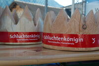

Alpinrunner
Transruinaulta/Transviamala

Samstag, 21.Oktober Transruinaulta / Sonntag, 22. Oktober Transviamala
folgende Alpinrunner sind bei Datasport gemeldet
| Transruinaulta & Transviamala | Samstag - Transruinaulta |
Sonntag - Transviamala |
| Dani Bolt | Dani Jörg | Jürg Zimmermann |
| Marco Jäger | Marc Homlicher | Dominique Manser |
| Werni Ott | Ruedi Wirz | Martin Conrad |
| Fabian Rüfenacht | Jean-Marie Zogg | Petra Gredig |
| Arnold Grischott | Otmar Arpagaus | Petra Bättig |
| Röbi Conrad | Silvio Arpagaus | |
| Michel Zogg | Edith Kortekaas | |
| Brigitte Eggerling | Alice Caluori | |
| Maria Conrad | Micheline Pang |
Wir freuen uns auf viele rote Alpinrunner - Shirt auf und neben den Rennstrecke